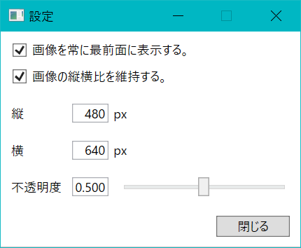

使い方
- インストール
- .zipを任意のフォルダに解凍する。
- 起動
- .exeを直接実行する。
-
次の画像が半透明の状態で画面上に表示される。

- 画像を開く
- 表示された画像上で右クリックする。
- 「画像を開く」をクリックする。
- 表示されるダイアログから画像（*.bmp,*.png,*.gif,*.jpg,*.jpeg,*.tiff,*.tifのいずれか）を選択し，「開く」ボタンをクリックする。
- 選択した画像が，設定された透明度（後述）で画面上に表示される。
- 画像の表示サイズ変更（マウス操作）
ウィンドウのサイズ変更と同じ要領で画像サイズを変更できる。- 表示されている画像の縁にマウスポインタを移動させると，ポインタの形状がサイズ変更時のものに変化する。
- ドラッグすると，画像サイズを変更できる。画像の縦横比を維持する設定（後述）が有効な場合，画像は縦横比を維持しながらサイズが変更される。
- 画像の移動
画像のドラッグまたはキーボードのカーソルキーにより画像を移動できる。 - 設定画面を開く
- 画像上で右クリックする。
-
「設定」をクリックすると，次の例のような設定画面が表示される。

- 画像の最前面表示の切替
- 設定画面の「画像を常に最前面に表示する。」にチェックを入れると，本アプリの画像が別のアプリよりも前面に表示されるようになる。
- 設定画面の「画像を常に最前面に表示する。」のチェックを外すと，本アプリがアクティブな場合にのみ画像が最前面に表示されるようになる。（通常のアプリの挙動と同じ）
- 画像の縦横比維持の切替
- 設定画面の「画像の縦横比を維持する。」にチェックを入れると，それ以降の画像サイズ変更時に画像の縦横比が維持される。
- 設定画面の「画像の縦横比を維持する。」のチェックを外すと，それ以降の画像サイズを縦横比を維持せず自由に変更できる。
- 画像の表示サイズ変更（数値入力）
- 設定画面の「縦」または「横」の数値を書き換えることで表示されている画像のサイズを変更できる。
「縦」「横」どちらかの値を書き換えると，縦横比を維持するように他方の値が連動して更新される。 - 画像表示の不透明度変更
- 設定画面の「不透明度」の数値の書き換えまたはスライダーの操作により，画像の不透明度を変更できる。
- 数値は0.002～1.000の間で変更でき，0.002で画像がほぼ完全な透明，1.000で完全な不透明となる。
- 設定画面の終了
- 設定画面の「閉じる」ボタンをクリックする。
- アプリの終了
- 画像上で右クリックする。
- 「閉じる」をクリックすると，アプリケーションが終了する。
- アンインストール .zipおよびこれを解凍して展開されたファイルを削除してください。